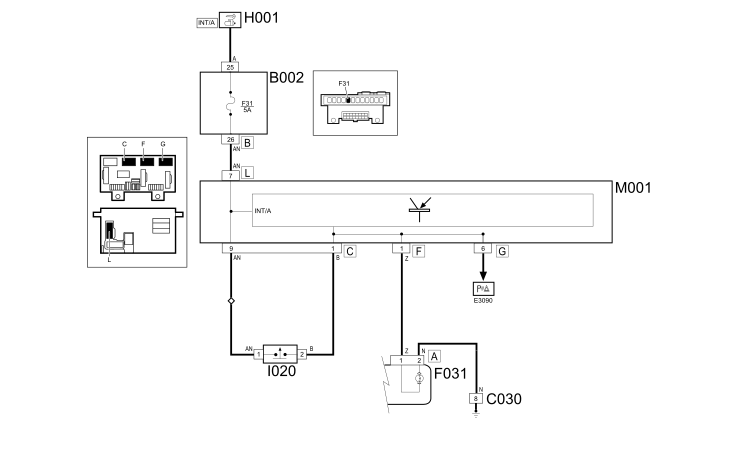

E2022 REVERSING LIGHTS - WIRING DIAGRAM
- Path
- Electrical equipment > 1 ELECTRICAL FUNCTIONS > E20 INTERIOR LIGHTING > E2022 REVERSING LIGHTS > E2022 REVERSING LIGHTS - WIRING DIAGRAM
- Kind
- wiring diagram
- Applies to
- engines: 1.3 JTD 16v; all production periods; only with equipment: SUV
- Interactive page
- https://sloeber94.github.io/elrnDB-fPnd/en/#/169002402
Applies to: engines: 1.3 JTD 16v; all production periods; only with equipment: SUV
Wiring diagram

COMPONENTS
Topics linked from this page (11)
- 2135B AUTOMATIC TRANSMISSION ELECTRICAL CONTROLS
- 5505A multi-function components
- 5505C vehicle compartment wiring
- 5520A ignition switch
- 5540A LIGHTING
- B002 JUNCTION UNIT UNDER DASHBOARD
- C030 LEFT REAR EARTH
- F031 RIGHT REAR LIGHT CLUSTER (FIXED PART)
- H001 IGNITION SWITCH
- I020 REVERSING LIGHTS SWITCH
- M001 BODY COMPUTER